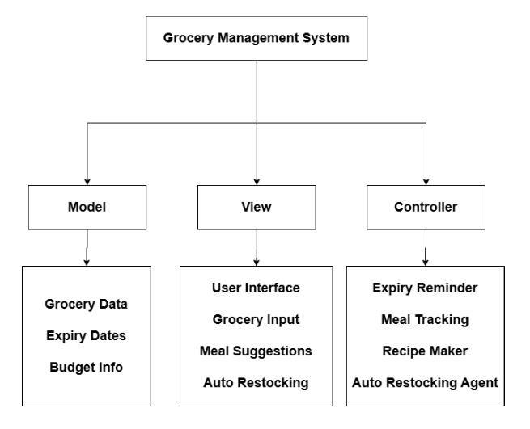

Date: 25 June 2026
Duration: 2:30 Hrs
Training Company: Auribises Technologies
Trainer: Ishant Kumar
The first day focused on understanding the training roadmap, expectations, and the fundamental concepts that will be used throughout the Agentic AI with Python training.
The trainer explained the Orange Juice Theory using the example of preparing orange juice through a juicer and then distributing it in multiple ways. The discussion focused on how a single source or processing system can serve multiple outputs and consumers. The concept was related to software systems, where data or functionality may pass through different layers before reaching end users.
The trainer further connected this idea with programming language execution models, discussing how C++, Java, and Python process and execute code through different mechanisms such as compilation, bytecode generation, and virtual machines.
MVC is a software design pattern that separates an application into three interconnected components:
This separation improves maintainability, scalability, and code organization.
The trainer assigned the following tasks during the session:
We were asked to design an MVC architecture for an application idea and briefly explain the role of each component.

This MVC design was created as part of the classroom activity. The Grocery Management System helps users track groceries, monitor expiry dates, manage budgets, generate recipes from available ingredients, and automate grocery restocking.
Responsible for storing and managing application data.
Responsible for presenting information and interacting with users.
Responsible for processing logic and coordinating between Model and View.
MVC (Model-View-Controller) is a software architectural pattern used to separate an application into three main components: Model, View, and Controller. The Model manages data and business logic, the View handles user interaction and presentation, and the Controller acts as a bridge between them. MVC improves code organization, maintainability, scalability, and reusability by separating responsibilities.
Today's session helped me understand how software systems can be structured using MVC Architecture. Designing my own Grocery Management System allowed me to practically apply the concepts rather than just learning the theory.
Day 1 provided a strong foundation for understanding software architecture and the overall direction of the Agentic AI with Python training. The practical MVC activity helped reinforce the concepts learned during the session.
The trainer informed us that the next session will focus on implementing MVC Architecture using Python.